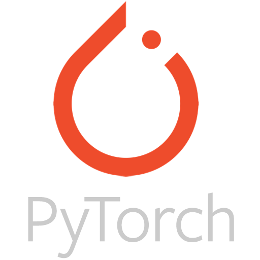
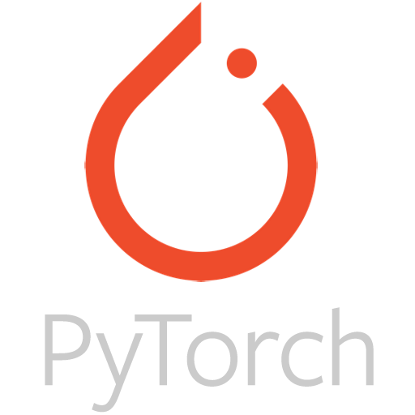

Simbotic
An advanced simulation platform that bridges virtual and physical worlds, enabling AI systems to learn through realistic interaction and environmental understanding.
While large language models have revolutionized AI, they often struggle with physical reasoning and three-dimensional understanding. Real-world robotics and autonomous systems require spatial perception, motion prediction, and the ability to learn from physical interaction.
Simbotic provides the infrastructure for AI to develop these capabilities through high-fidelity digital twins and unlimited synthetic training scenarios, accelerating the path from simulation to real-world deployment.
 



Epic MegaGrants Recipient
Simbotic has been accelerated by Epic MegaGrants funding. We're actively developing plugins, extensive documentation, and tutorials. Contact us to explore how Unreal Engine 5 can transform your robotics, AI training, or autonomous systems projects.
ThirdParty Integrations
Facilitates bidirectional interfacing with prominent media and robotics ecosystems to extend LLM capabilities.